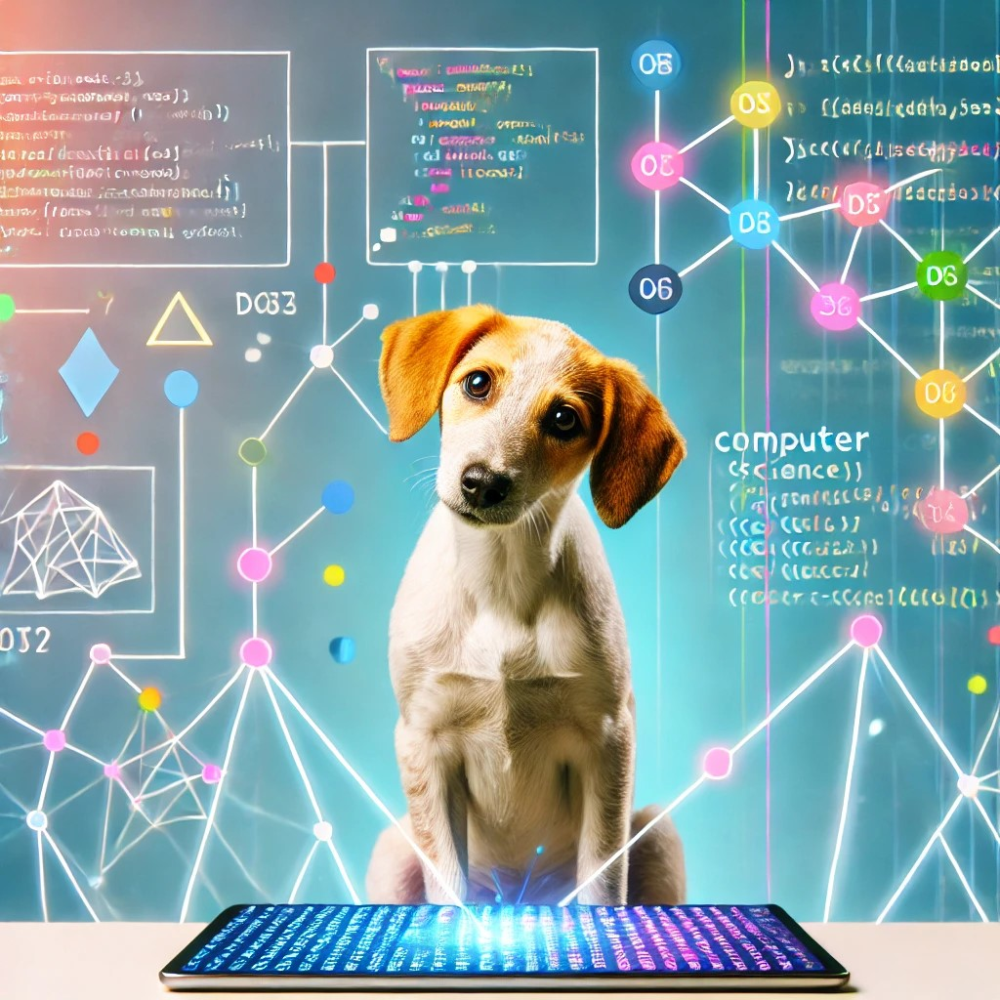

Algoritmos
¿Que son los algoritmos?
En informática, se llaman algoritmos el conjunto de instrucciones sistemáticas y previamente definidas que se utilizan para realizar una determinada tarea. Estas instrucciones están ordenadas y acotadas a manera de pasos a seguir para alcanzar un objetivo.
Todo algoritmo tiene una entrada, conocida como inputy una salida, conocida como output,y entre medias, están las instrucciones o secuencia de pasos a seguir. Estos pasos deben estar ordenados y, sobre todo, deben ser una serie finita de operaciones que permitan conseguir una determinada solución.
Caracteristicas de los algoritmos
Los algoritmos tienen las siguientes caracteristicas generales:
- Son secuenciales. Operan en secuencia, deben procesarse uno a la vez, comenzando por las primeras instrucciones y avanzando linealmente hacia las últimas.
- Son precisos y específicos. Las instrucciones que los componen no pueden ser ambiguas o subjetivas, sino directas, fáciles de seguir y lo menos generales posible.
- Son ordenados. Deben leerse en un orden específico para que tengan sentido. Descolocar un algoritmo o un elemento del algoritmo puede invalidar a los demás.
- Son finitos. Tienen un inicio y un fin determinados.
- Son definidos. Un mismo algoritmo debe dar siempre los mismos resultados si es alimentado por los mismos elementos.
Partes de un algoritmo
Todo algoritmo se compone de tres partes: entrada, proceso y salida.
Los algoritmos tienen las siguientes caracteristicas:
- Input o entrada: Contiene las instrucciones iniciales, en las que se ingresan los datos que el algoritmo necesita para operar.
- Proceso o instrucciones: Está compuesto por las operaciones lógicas que el algoritmo emprenderá con lo recibido del input.
- Output o salida: Son los resultados obtenidos luego del proceso, una vez terminada la ejecución del algoritmo.